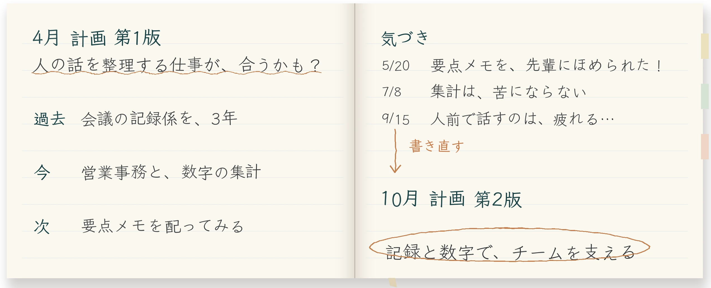

プログラム
勉強会・研修・授業
- 過去やってきたことを、出し合う
- 今特徴と、立つ場所を見る
- 次来週の時間の使い方を決める
皆さんの場で、すぐに開けます
はじめに
いま起きていること
3人に1人
大卒で就職して、3年以内に辞める人（31.2%）
厚生労働省「新規学卒就職者の離職状況」（2023年3月卒、2026年10月公表）
7割
やりたい仕事が「明確」ではない20代
ツナグバ「20代転職白書」第7回（2026年6月、20代322人。「明確にある」は30.4%）
54.3%
社会人になることに、期待より不安が大きい大学生
マイナビ「2027年卒 大学生キャリア意向調査8月」（2026年8月、1,557人）
「やりたいこと」を決めてから、動く。
その順番が、前提になっている。
だから、決まらない人ほど、動けなくなる。
足りないのは、やりたいことではない。
決まらない前提のもと、前に進むための計画。
考え方
起業しない人にも、経営の考え方を。
事業をつくる人は、いきなり未来を書きません。これまでの実績と、いまの環境から、計画を立てます。キャリアも同じです。
未来を決めなくていい。
過去と今から、始める。
| いつ | 会社は | わたしは |
|---|---|---|
| 過去 | 実績は何か | 何を続けてきたか |
| 今 | 市場はどうか | どこに立っているか |
| 次 | 次の一手は何か | 来週の時間を、どこに使うか |
プログラムと教材
勉強会・研修・授業
皆さんの場で、すぐに開けます
書き足していくブック
プログラム提供と並行して検証中
個人 ・ 企業 ・ 学校 へ
1冊の中身
学校にも、記録の仕組みはある。足りないのは、社会とのつながり。

自分の進み方が決まる。
同じ1冊で、上司とも、会社とも、学生とも話せる。
これからつくっていく広がりです
届け先
求めている人がいて、すでにお金と時間が使われている。入り口は3つです。
研修で
求めている
80.1%
能力開発や人材育成に、問題を感じている事業所
厚生労働省 令和7年度「能力開発基本調査」（事業所調査）
すでにお金と時間が使われている
54.4%
研修や自己啓発支援に、費用を出した企業
同（企業調査。OFF-JT か自己啓発支援に費用を支出した企業）
授業・カリキュラムで
求めている
54.3%
社会人になることに、期待より不安が大きい大学生
マイナビ「2027年卒 大学生キャリア意向調査8月」（2026年8月、1,557人）
すでにお金と時間が使われている
98.8%
キャリア教育を、正課の授業で行っている大学
文部科学省「大学における教育内容等の改革状況について（令和6年度）」
メンタリング・コーチングで
求めている
約7割
やりたい仕事が「明確」ではない20代
ツナグバ「20代転職白書」第7回（2026年6月、20代322人）
すでにお金と時間が使われている
41.9%
自己啓発に取り組んだ20代（年間の平均は55.0時間）
厚生労働省 令和7年度「能力開発基本調査」（個人調査、20〜29歳）
会社
頑張る人が、「本当にやるべきこと」に
力を注げる状態をつくる。
ミッションを持って奔走する人ほど、頭の中が散らかり、力を注げていない。だから、外側と内側から支えます。
やらなくていいことを、
巻き取る・仕組みに残す
事務局支援事業受託・継続中
やるべきことに、
向き合える機会をつくる
人財育成・教育事業このページの取り組み
よくある質問
はい。むしろ、そういう人のための考え方です。未来から決めずに、これまでやってきたことと、いま立っている場所から始めます。
過去・今・次の3つです。何を続けてきたか。どこに立っているか。来週の時間を、どこに使うか。そのあとは、気づきを日々1行ずつ足し、節目に書き直します。
開けます。勉強会・研修・授業の形があります。場に合わせて、ご相談ください。
教材は、プログラムの提供と並行して検証しています。一緒に中身をつくってくださる方を探しています。
勉強会とプログラムの料金は、決まりしだい、このページでお知らせします。
ご連絡
勉強会、転職・就活に向けたプログラム、企業研修・学校の授業。まだ決まっていないことでも、構いません。